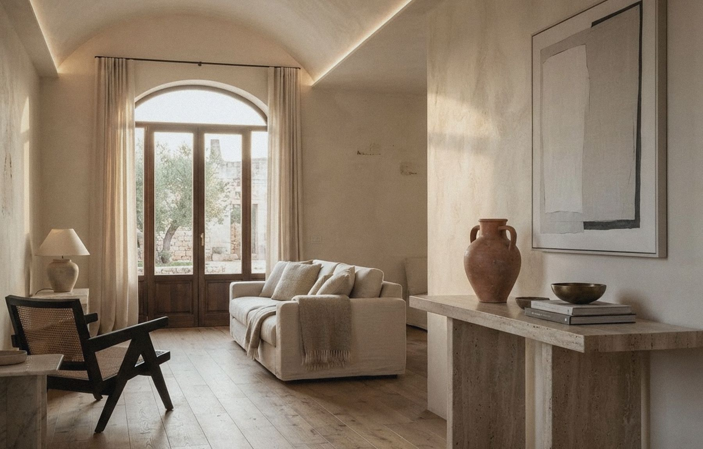
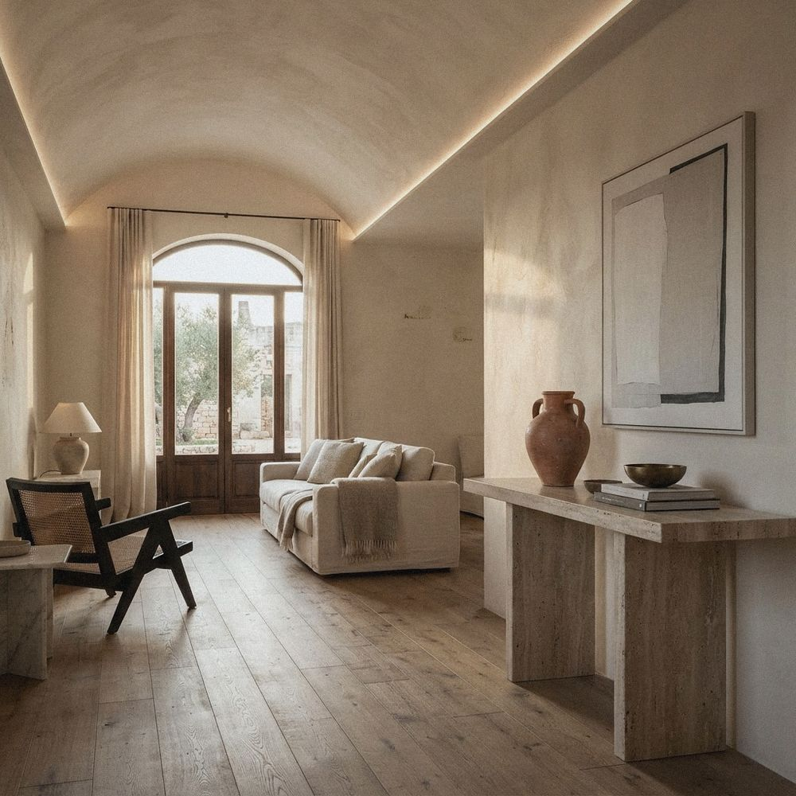

01
Cartongesso
Strutture precise, proporzioni pulite, soluzioni costruite intorno allo spazio.
- Pareti divisorie e contropareti
- Controsoffitti e velette LED
- Nicchie, librerie e volumi su misura
- Lavorazioni in gesso
Impresa edile di famiglia · dal 1990
Cartongesso, tinteggiatura e finiture decorative per case, ville e attività commerciali. Dal primo sopralluogo all’ultima pulizia.
Parliamo del tuo progetto
Un unico referente per trasformare il tuo interno.
Cosa facciamo
Strutture precise, proporzioni pulite, soluzioni costruite intorno allo spazio.
Dalla preparazione del fondo all’ultima mano: superfici uniformi, colori pieni, risultato duraturo.
Materia e luce per interni che non sembrano tutti uguali.
Lavori realizzati
Una selezione di lavorazioni per abitazioni, ville e locali commerciali. Ogni progetto nasce da un’esigenza diversa.
Stuccatura dei giunti, rasatura, controllo in controluce.
Il nostro modo

Dettagli che restanoSiamo un’impresa a conduzione familiare. Ci occupiamo di tutte le lavorazioni: preparazione, posa, pittura, finiture particolari e pulizia post-cantiere. Un solo team, meno complicazioni.
Dove lavoriamo
Operiamo a Salerno, nel Vallo di Diano e nel Golfo di Policastro. Raccontaci dove vuoi intervenire: il sopralluogo e la consulenza iniziale sono gratuiti.
Il nostro nome, la nostra missione
È la base.
È ciò che rende possibile ogni risultato finale.
Richiama l’angolo retto.
Precisione. Allineamento. Controllo.
Per noi non è un dettaglio.
È un principio operativo.
Collaborazione e soluzioni su misura
Opere edili, cartongesso e finiture
con controllo diretto delle lavorazioni.
Verifichiamo quote, livelli e allineamenti.
Analizziamo le interferenze prima dell’esecuzione.
Ogni fase viene pianificata per garantire
continuità tecnica e qualità nel risultato finale.
La tua visione, il nostro lavoro
Collaboriamo con tecnici e professionisti
per realizzare spazi funzionali e ben costruiti.
Precisione nelle misure.Cura nell’esecuzione.Risultati duraturi.
Per privati e attività
Casa
Pareti, controsoffitti, colori e finiture per appartamenti, ville e ristrutturazioni.
Business
Locali commerciali, studi e ambienti che devono comunicare qualità appena si entra.
Hai visto un lavoro che ti piace?
Dal cantiere
Impasto, stuccatura dei giunti, rasatura e controllo della parete in controluce.
Altri video su Instagram